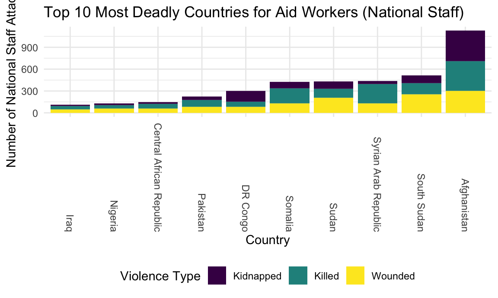

Exploratory Analyses
url = "https://aidworkersecurity.org/incidents/search"
aidworker_html = read_html(url)
aidworker_df =
aidworker_html %>%
html_nodes(css = "table") %>%
first() %>%
html_table() %>%
as_tibble()
aidworker_df =
aidworker_df %>%
janitor::clean_names() %>%
select(-source, -verified) %>%
rename(year = year_sort_descending) %>%
mutate(intl_org_affected =
case_when(
un != 0 ~ "yes",
ingo != 0 ~ "yes",
icrc != 0 ~ "yes",
ifrc != 0 ~ "yes",
other != 0 ~ "yes",
lngo_and_nrcs != 0 ~ "no"),
intl_org_affected = as.factor(intl_org_affected)) %>%
mutate(
latitude = as.numeric(latitude),
longitude = as.numeric(longitude)
) %>%
relocate(id, month, day, year, country, intl_org_affected)
## This is a function that should turn strings with empty spaces into NA
empty_as_na <- function(x){
if("factor" %in% class(x)) x <- as.character(x)
ifelse(as.character(x)!="", x, NA)
}
aidworker_df =
aidworker_df %>% mutate_each(funs(empty_as_na))
aidworker_df =
aidworker_df %>%
filter(country != "Total") %>%
mutate(attack_abr = case_when(
means_of_attack == "Kidnap-killing" ~ "Kidnapping",
means_of_attack == "Kidnapping" ~ "Kidnapping",
means_of_attack == "Body-borne IED" ~ "IED",
means_of_attack == "Vehicle-born IED" ~ "IED",
means_of_attack == "Roadside IED" ~ "IED",
means_of_attack == "Landmine" ~ "Explosives",
means_of_attack == "Shelling" ~ "Explosives",
means_of_attack == "Other Explosives" ~ "Explosives",
means_of_attack == "Aerial bombardment" ~ "Explosives",
means_of_attack == "Rape/sexual assault" ~ "Rape/sexual assault",
means_of_attack == "Complex attack" ~ "Complex attack",
means_of_attack == "Shooting" ~ "Shooting",
means_of_attack == "Unknown" ~ "Unknown",
means_of_attack == "Bodily assault" ~ "Bodily assault"
))Modern humanitarian action began in 1859 with the founding of the Red Cross movement after activist Henri Dunant witnessed battlefield suffering in Solferino, Italy and envisioned a neutral party that could assist victims of conflict. Aidworkers today follow common core principles of humanity, neutrality, impartiality, and independence to assist any person in need: and as such, should be protected from violence themselves. Unfortunately, the world is becoming more dangerous for those who provide humanitarian assistance.
Attack trends over time
Incidents of aid worker attacks have been increasing over the past 23 years of data collection, as the plot below shows. Hover over points to display total victims in each year, with a breakdown of ‘national’ (local) staff and ‘international’ (expatriate) staff affected.
plot_1 =
aidworker_df %>%
group_by(year) %>%
summarize(tot_attacks = n_distinct(id),
tot_national = sum(total_national_staff),
tot_intl = sum(total_international_staff),
tot_both = sum(total_victims)) %>%
mutate(text_label =
str_c("Total Victims: ", tot_both, "\nInternational Staff: ", tot_intl,
"\nNational Staff: ", tot_national)) %>%
plot_ly(
x = ~year, y = ~tot_attacks, text = ~text_label,
type = "scatter", mode = "markers")
layout(plot_1, title = "Aid Worker Attacks Over Time", xaxis = list(title = "Year"), yaxis = list(title = "Number of Attack Incidents"))Most dangerous countries
Types of violence for national and international staff
danger_countries_df =
aidworker_df %>%
group_by(country) %>%
summarize(tot_affected_per_country = sum(total_national_staff, na.rm = TRUE)) %>%
mutate(rank = min_rank(desc(tot_affected_per_country))) %>%
filter(rank < 11)
aidworker_df %>%
filter(country %in% c("Afghanistan", "Central African Republic", "DR Congo",
"Iraq", "Pakistan", "Somalia", "South Sudan", "Sudan",
"Syrian Arab Republic", "Nigeria")) %>%
group_by(country) %>%
summarize("Killed" = sum(nationals_killed),
"Wounded" = sum(nationals_wounded),
"Kidnapped" = sum(nationals_kidnapped),
tot_natl = sum(total_national_staff)) %>%
pivot_longer(
"Killed":"Kidnapped",
names_to = "Violence_type",
values_to = "Number"
) %>%
mutate(country = fct_reorder(country, tot_natl)) %>%
ggplot(aes(x = as.factor(country), y = Number, fill = Violence_type)) +
geom_bar(stat="identity") +
labs(
title = "Top 10 Most Deadly Countries for Aid Workers (National Staff)",
x = "Country",
y = "Number of National Staff Attacked"
) +
viridis::scale_fill_viridis(
name = "Violence Type",
discrete = TRUE
) +
theme(axis.text.x = element_text(angle = -70, vjust = 0.5, hjust=1))
danger_countries_df =
aidworker_df %>%
group_by(country) %>%
summarize(tot_affected_per_country = sum(total_international_staff, na.rm = TRUE)) %>%
mutate(rank = min_rank(desc(tot_affected_per_country))) %>%
filter(rank < 11)
aidworker_df %>%
filter(country %in% c("Afghanistan", "Chechnya", "DR Congo",
"Iraq", "Kenya", "Somalia", "South Sudan", "Sudan",
"Syrian Arab Republic", "Yemen", "Libyan Arab Jamahiriya")) %>%
group_by(country) %>%
summarize("Killed" = sum(internationals_killed),
"Wounded" = sum(internationals_wounded),
"Kidnapped" = sum(internationals_kidnapped),
tot_intl = sum(total_international_staff)) %>%
pivot_longer(
"Killed":"Kidnapped",
names_to = "Violence_type",
values_to = "Number"
) %>%
mutate(country = fct_reorder(country, tot_intl)) %>%
ggplot(aes(x = as.factor(country), y = Number, fill = Violence_type)) +
geom_bar(stat="identity") +
labs(
title = "Top 11 Most Deadly Countries for Aid Workers (International Staff)",
x = "Country",
y = "Number of International Staff Attacked"
) +
viridis::scale_fill_viridis(
name = "Violence Type",
discrete = TRUE
) +
theme(axis.text.x = element_text(angle = -70, vjust = 0.5, hjust=1))
Top 5 Most Dangerous countries over time
danger_countries_df =
aidworker_df %>%
group_by(country) %>%
summarize(tot_affected_per_country = sum(total_victims, na.rm = TRUE)) %>%
mutate(rank = min_rank(desc(tot_affected_per_country))) %>%
filter(rank < 11)
aidworker_df %>%
filter(country %in% c("Afghanistan", "Somalia", "South Sudan", "Sudan",
"Syrian Arab Republic")) %>%
group_by(country, year) %>%
summarize(tot_victims = sum(total_victims)) %>%
ggplot(aes(x = year, y = tot_victims, color = country)) +
geom_line() +
labs(
title = "Top 5 Most Dangerous Countries Over Time",
x = "Year",
y = "Total Aidworker Victims"
)
Most dangerous countries
Plots
International vs National Staff
Attack Types
Means of Attack
Natalie Boychuk, Alisha Sarakki, Brennan Bollman, Emily Bamforth, Kailey Rishovd
Visualizations and analyses performed using R (v4.0.3) and RStudio (v1.3.1073).
Additional interactivity added using plotly (v4.13.0) and Shiny (v1.5.0).
Click here to see publicly available Aid Worker Security dataset, a project of Humanitarian Outcomes.
Click here to see publicly available Uppsala Conflict Data Program, a project of Uppsala University Department of Peace and Conflict Research.
Natalie Boychuk, Alisha Sarakki, Brennan Bollman, Emily Bamforth, Kailey Rishovd
Visualizations and analyses performed using R (v4.0.3) and RStudio (v1.3.1073).
Additional interactivity added using plotly (v4.13.0) and Shiny (v1.5.0).
Click here to see publicly available Aid Worker Security dataset, a project of Humanitarian Outcomes.
Click here to see publicly available Uppsala Conflict Data Program, a project of Uppsala University Department of Peace and Conflict Research.